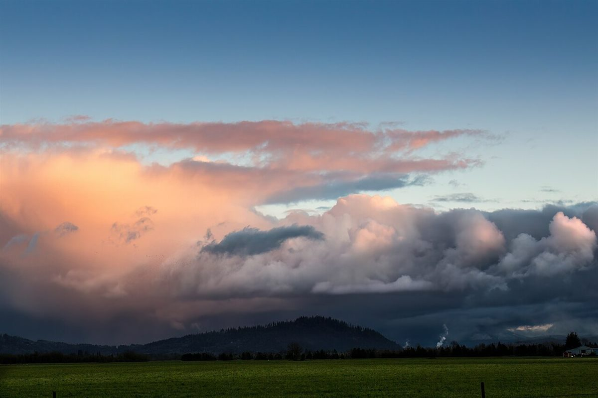

口コミ
いつか行ってみたい
店名から自然に想像できる声を、制作側が創作したものです。
以下は制作側が考えた創作のイメージ例で、実在のお客様の投稿ではありません。実際の口コミ・評価とは関係ありません。
お店の名前の響きが気になって、いつか行ってみたいと思いました。まずはInstagramをのぞいてみたいです。
「いつもはれ」という屋号を見て、どんなお店なのか知りたくなりました。Instagramをのぞいてみたいです。
近くに行く機会があったら、いつか行ってみたいお店としてメモしておきたいです。
